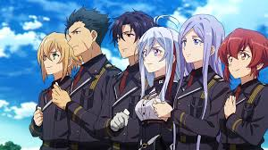
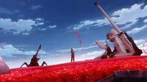

Eighty-Six...
Adaptando de uma novel de mesmo nome publicada desde 2017, escrita por “Asato Asato” e ilustrada por “Shirabi”, e tendo seu roteiro escrito por Toshiya Oono (que faz aqui seu melhor trabalho até então), o enredo gira entorno de uma temática de guerra futurista em um universo fictício, focando em temas como os horrores dos conflitos, direitos humanos, controle de informação e desigualdades sociais.
A obra tem clara influência de outras grandes franquias de mechas como Gundam, apresentando dinâmicas centrais focadas em crianças soldados, o que lembra bastante séries como Iron-Blooded Orphans.
Essa é narrada em um formato binário com dois núcleos principais paralelos que se interconectam pela interação dos dois protagonistas: “Milizé”, no núcleo social organizado e de branda tensão, e “Shin”, um adolescente soldado membro de uma divisão “Eighty Six” e líder de um esquadrão “Spearhead”, onde os outros coadjuvantes importantes da obra estão.
Enredo Inicial

O enredo é iniciado quando Milizé (apelidada de Lena), uma major descendente de alta classe social da República, é designada por seu tio, também um militar, a cuidar de um esquadrão, justamente o Spearhead.
Essa função é realizada por meio remoto, onde nenhum dos lados possuem interação direta, limitando o relacionamento das partes e as possibilidades de auxílio. Os motivos dessa distância são posteriormente explicados em detalhes, mas envolve as distinções de castas sociais.
Quando contata o esquadrão pela primeira vez essa é mal recebida e tratada de forma ácida pela maior parte dos membros. Isso deve-se ao fato de que todos os Eighty Six são pessoas que sofreram com algum tipo de perseguição da República e foram selecionados e forçados a lutar até a morte, desde novos, em péssimas condições.
Sabendo da situação a protagonista tenta ganhar a confiança dos membros do esquadrão (o que acontece de forma progressiva e bem natural durante a narrativa) enquanto busca fazer exigências, sempre negadas, ao seu tio.
Depois de várias tentativas essa descobre por meio dele e de sua prima a realidade a respeito da situação social de ambas as classes, e as razões do porque aqueles adolescentes são selecionados para guerrear.Paralelo a isso Shin e seus companheiros lutam em uma batalha sem fim e objetivos, onde sua única motivação é uma situação não resolvida de seu passado que pode ser solucionada no campo de batalha.

Os inimigos enfrentados são a “Legião”, mechas controlados por IA’s, onde muitas delas são representações digitalizadas dos próprios mortos no campo de batalha, mantendo inclusive as memórias e personalidade desses.
No universo da obra a República de San Magnolia vive em guerra com o Império de Giadian (que detém os Legions) e vende para a alta sociedade que a situação dos conflitos são controladas e sem grandes perdas, escondendo a presença dos dramas vividos pelos Eighty Six, tradados pela mídia como apenas números. O que é pretexto para a discussão a respeito do controle de informação e catalizador das frustrações e desejo de justiça da protagonista.
O enredo é interessante e traz um universo com nuances e características criativas que dão identidade a obra, como por exemplo os Legions e Para-RAIDs.
Mesmo que a progressão desse seja bastante previsível, onde o anime deixa muito claro seu direcionamento, a interação orgânica entre os personagens, a condução de problemáticas enfrentadas por esses, suas emoções perante as perdas dos conflitos, as motivações dos protagonistas, e a escolha de uma narrativa conectada pelos dois sem contato direto, a tornaram instigante e de certa forma diferente.
Além desses aspectos um elemento de destaque é a presença de boa reflexão sobre os contrastes de condições do povo Alba (os beneficiados) e os Colorata (os que geralmente se tornam Eighty Six’s), e a representação dos horrores e efeitos da guerra na psique dos jovens soldados.